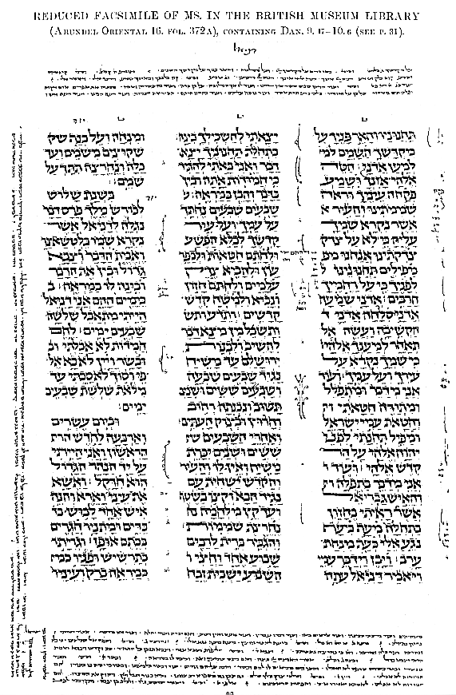

|
Al the oldest and best manuscripts of the Hebrew Bible contain on every page, beside the Text (which is arranged in two or more columns), a varying number of lines of smaller writing, distributed between the upper and lower margins. This smaller writing is called the Massorah Magna or Great Massorah, while that in the side margins between the columns is called the Massorah Parva or Small Massorah. The illustration given on p. 32 is a reduced facsimile of a Hebrew MS. (16 1/4 inches x 12 3/8), written in a German hand, about the year A.D. 1120. The small writing in the margins in this particular MS. is seen to occupy seven lines in the lower margin, and four lines in the upper; while in the outer margins and between the three columns is the Massorah Parva. The word Massorah is from the root masar, to deliver something into the hand of another, so as to commit it to his trust. Hence the name is given to the small writing referred to, because it contains information necessary to those who trust the Sacred Text was committed, so that they might transcribe it, and hand it down correctly. The Text itself had been fixed before the Massorites were put in charge of it. This had been the work of the Sopherim (from saphar, to count, or number). Their work, under Ezra and Nehemiah, was to set the Text in order after the return from Babylon; and we read of it in Neh. 8:8 (*1) (cp. Ezra 7:6, 11). The men of "the Great Synagogue" completed the work. This work lasted about 110 years, from Nehemiah to Simon the first, 410 - 300 B.C. The Sopherim were the authorized revisers of the Sacred Text; and, their work being completed, the Massorites were the authorized custodians of it. Their work was to preserve it. The Massorah is called "A Fence to the Scriptures," because it locked all words and letters in their places. It does not contain notes or comments as such, but facts and phenomena. It records the number of times the several letters occur in the various books of the Bible; the number of words, and the middle word; the number of verses, and the middle verse; the number of expressions and combinations of words, &c. All this, not from a perverted ingenuity, but for the set purpose of safeguarding the Sacred Text, and preventing the loss of misplacement of a single letter or word. This Massorah is not contained in the margins of any one MS. No MS. contains the whole, or even the same part. It is spread over many MSS., and Dr. C. D. Ginsburg has been the first and only scholar who has set himself to collect and collate the whole, copying it from every available MS. in the libraries of many countries. He has published it in three large folio volumes, and only a small number of copies has been printed. These are obtainable only by the original subscribers. When the Hebrew Text was printed, only the large type in the columns was regarded, and the small type of the Massorah was left, unheeded, in the MSS. from which the Text was taken. When translators came to the printed Hebrew Text, they were necessarily destitute of the information contained in the Massorah; so that the Revisers as well as the Translators of the Authorized Version carried out their work without any idea of the treasures contained in the Massorah; and therefore, without giving a hint of it to their readers. This is the first time that an edition of the A.V. has been given containing any of these treasures of the Massorah, that affect so seriously the understanding of the Text. A vast number of the Massoretic notes concern only the orthography, and matters that pertain to the Concordance. But many of those which affect the sense, or throw any additional light on the Sacred Text, are noted in the margin of The Companion Bible. Some of the important lists of words which are contained in the Massorah are also given, viz. those that have the "extraordinary points" (Ap. 31); the "eighteen emendations" of the Sopherim (see Ap. 33); the 134 passages where they substituted Adonai for Jehovah (see Ap. 32); and the Various Readings called Severin (see Ap. 34). These are given in separate Appendixes; but other words of any importance are preserved in our marginal notes. Readers of The Companion Bible are put in possession of information
denied to former generations of translators, commentators, critics, and
general Bible students.
For further information on the Massorah see Dr. Ginsburg's Introduction
the the Hebrew Bible, of which only a limited edition was printed;
also a small pamphlet on The Massorah published by the King's Printers.
(*1) The Talmud explains that "the book" meant the original text; "distinctly" means explaining it by giving the Chaldee paraphrase; "gave the sense" means the division of words, &c. according to the sense; and "caused them to understand the reading" means to give the traditional pronunciation of the words (which were then without vowel points). 
|